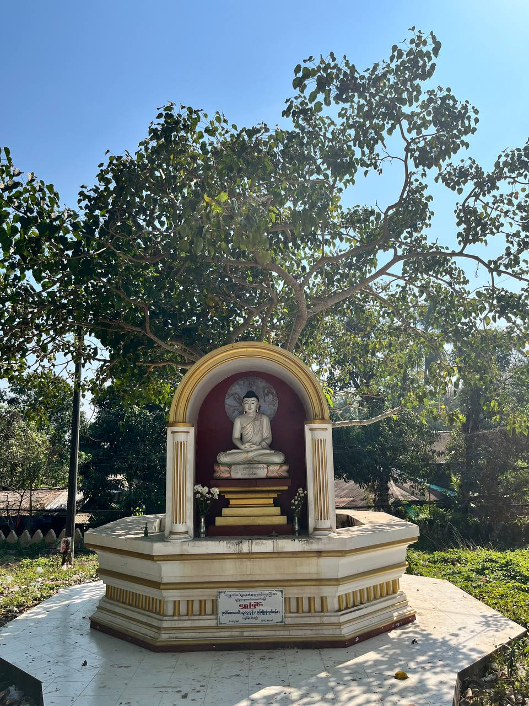
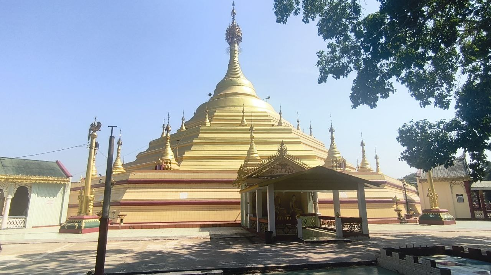
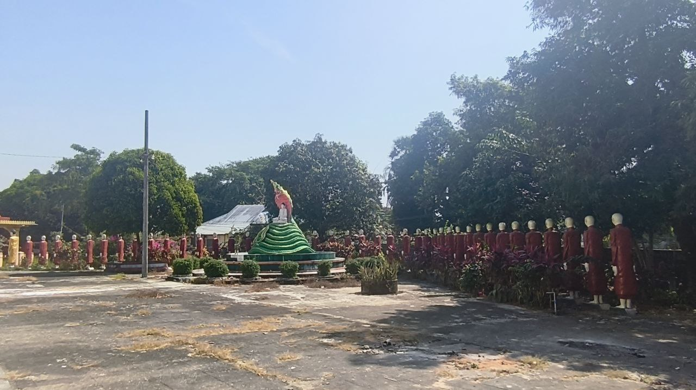

ရွှေစည်းခုံစေတီတော်မြတ်ကြီး၏ ရင်ပြင်တော်ပတ်လည်တွင် ပင်မစေတီတော်ကြီးကို ရံပတ်ထားသော အရံစေတီငယ်များ နှင့် ထောင့်စေတီများ တည်ရှိကြပြီး ၎င်းတို့ကို ခေတ်အဆက်ဆက် သဒ္ဓါကြည်ညိုသူ အလှူရှင်များက ထပ်မံပူဇော်ခဲ့ကြခြင်းဖြစ်သည်။ ထူးခြားချက်အနေဖြင့် စေတီတော်၏ အရပ်လေးမျက်နှာတွင် သပ္ပာယ်ကြည်ညိုဖွယ်ကောင်းသော အာရုံခံတန်ဆောင်းကြီးလေးခု ရှိပြီး ထိုတန်ဆောင်းများအတွင်း၌ ဂေါတမဗုဒ္ဓမြတ်စွာဘုရား၏ ရုပ်ပွားတော်မြတ်များကို ကိန်းဝပ်စံပယ်တော်မူစေကာ ပြည်သူများ အေးချမ်းစွာ ဝတ်ပြုဆုတောင်းနိုင်ရန် စီစဉ်ထားပါသည်။ ထို့အပြင် ရင်ပြင်တော်ပေါ်၌ ရှေးဟောင်းလက်ရာ ပန်းပုထုလုပ်မှုများဖြင့် တန်ဆာဆင်ထားသော တန်ဆောင်းငယ်များနှင့် ဗုဒ္ဓဝင်ဇာတ်ကွက်များကို ဖော်ပြထားသည့် ရုပ်လုံးရုပ်ကြွများရှိသော ဂူဘုရားငယ်များလည်း တည်ရှိသဖြင့် ပုသိမ်ရွှေစည်းခုံစေတီတော်သည် အနုပညာလက်ရာစုံလင်သော ဘုရားစုတစ်ခုကဲ့သို့ မြင်တွေ့ရမည် ဖြစ်ပါသည်။


